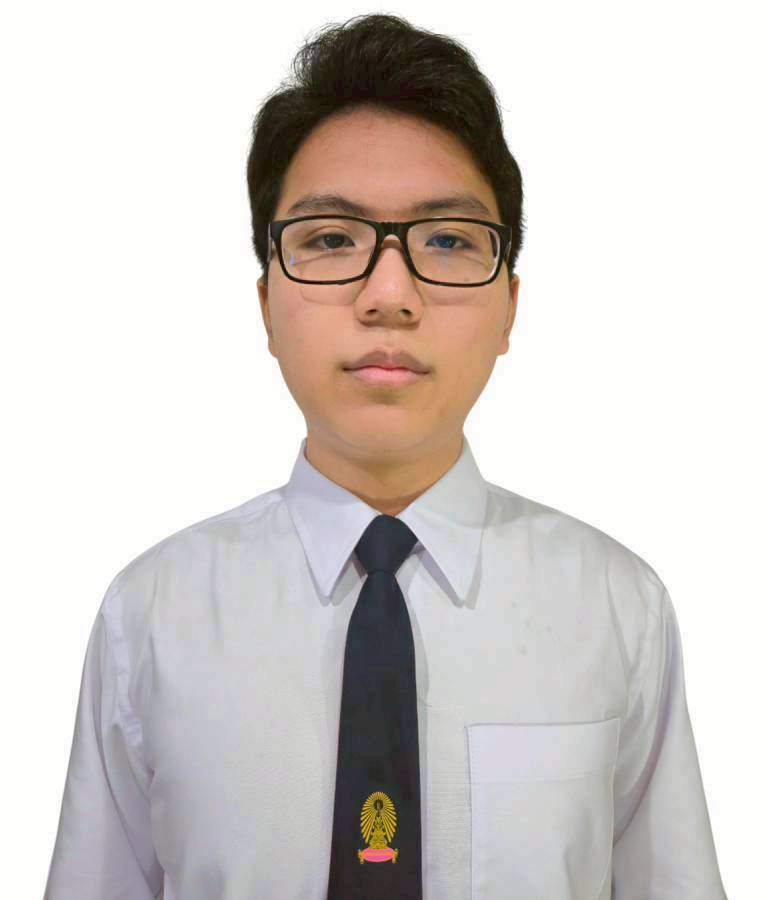

Chulalongkorn University
B.Eng. in Computer Engineering & Digital Technology (Sandbox) - 2025 - Present

Second-Year Undergraduate - Computer Engineering & Digital Technology (Sandbox)
Faculty of Engineering, Chulalongkorn University - Class of 2025
Second-year undergraduate student in Computer Engineering and Digital Technology (Sandbox), Faculty of Engineering, Chulalongkorn University. My work and learning path focus on artificial intelligence, computer vision, AIoT, data science, cybersecurity, and software systems. This CV expands the one-page resume into a chronological record of education, training, competitions, awards, projects, leadership, and technical growth.
Currently studying in an engineering program that combines computer engineering foundations with digital technology, software development, data-driven problem solving, and applied AI. My current academic direction connects algorithmic thinking, machine learning, computer vision, and practical engineering deployment.
Completed upper secondary education with strong academic performance and sustained participation in computer science, mathematics, cybersecurity, and innovation activities. Received the Academic Excellence Honor Badge, Second Place, and Certificates of Excellence in Academic Achievement and Good Conduct across 12 consecutive academic years.
Currently developing an applied AI project for AXONS Corporate's AXONS Eyes Team, with work spanning computer-vision model evaluation, data pipelines, visual-quality analysis, and edge-focused deployment. The internship connects my academic AI and computer-vision experience with real industrial constraints and production-oriented project development.
Contribute to DevOps and security work for CEDT Talent Journey, a student activity management platform supporting event registration, evaluations, attendance tracking, and credit equivalence. Responsibilities include improving platform security, developing administrative tools, and supporting workflows for staff to review activity information and approve credit transfer requests.
Served as a Grade 12 student committee member in the Academic Division and acted as a liaison with the Information Technology Department, supporting academic coordination and technology-related communication within the school.
Participated in technology-focused workshops and collaborative activities to explore computer science fundamentals, emerging technologies, and practical development skills.
Completed a short internship and presented "Dynamic Chair," a project using ESP32 as a core component for a business-oriented application. The experience introduced me to applied programming, embedded prototyping, and communicating a technical concept in a workplace setting.
Progressed through AIAT's national AI engineer development pathway, beginning with more than 10,000 Level 1 applicants and qualifying into the 150-participant Level 2 cohort. Level 1 covered AIAT MOOC upskill/reskill coursework, Foundation AI (Theory), and a qualification hackathon. Level 2 combined one month of online preparation, four mini-hackathons, and a one-month onsite intensive AI bootcamp with four industry-challenge hackathons across five AI domains, while building networks with leading instructors and experts.
Level 3 focuses on real workplace experience. I was selected for a two-month AI apprenticeship at AXONS Corporate, where I am developing an applied project before returning to present the internship project and complete the program-wide evaluation.
Selected as a representative of the POSN Computer Center, Satriwithaya School under the Royal Patronage - Kasetsart University, and participated in the 20th Thailand Olympiad in Informatics. The experience strengthened my algorithmic thinking, competitive programming discipline, and ability to solve complex problems under time constraints.
Completed POSN Computer Science training through Camp 1 and Camp 2. Camp 1 was held from 2 - 18 October 2023 at Satriwithaya Mahapruettharam School Center under the Royal Patronage, Bangkok. Camp 2 was held from 18 March - 3 April 2024 at the Faculty of Science, Kasetsart University, Bangkok.
Selected as one of 45 participants from over 500 applicants to join a 10-week AI training and hands-on project development program organized by Vidyasirimedhi Institute of Science and Technology (VISTEC). The program introduced me to AI project development, independent research, and applied experimentation.
Participated in Thailand Mathematics Academic Camp activities, including the 11th TMAC from 29 April - 1 May 2023. This continued my long-term interest in mathematics and problem solving.
Led software and model design for a 10-member team building an on-device running-form analyzer. A Nano 33 BLE with an LSM9DS1 streams raw accelerometer and gyroscope data, while the UNO Q Linux side runs an XGBoost classifier with a TFLite Transformer fallback to assess cadence, vertical oscillation, ground contact time, trunk forward lean, heel-strike likelihood, and impact loading rate.
Integrated Modulino Thermo for real-time temperature, humidity, and heat-index context, broadcast results over BLE, and visualized the analysis on a React + Vite dashboard. The project received the Academic Popular Vote award at the WellSense AIoT Hackathon.
Built an AI-powered Thailand travel recommendation web app that turns an uploaded mood image into up to five matching destinations. The system uses a three-agent pipeline: Gemini vision extracts Thai vibe keywords, Tavily searches local travel reviews and blogs, and Gemini reasoning ranks destinations with descriptions, local tips, transport guidance, food suggestions, photos, and Google Maps links.
Implemented the Gradio interface and Python workflow with Gemini 2.0 Flash, Tavily AI Search, Pillow, and python-dotenv, supporting optional filtering across Thailand's 77 provinces and 6 regions.
Developed a real-time computer-vision project that detects student behavior in classroom settings. The project grew from knowledge gained through AI Builders 2024 and required independent research across local and international references. It received a Silver Medal at the 9th Demonstration Academic Fair 2024 under the National and International Innovation Creation Project at Chulalongkorn University Demonstration School.
Participated as part of the development team for an AI-powered game designed to reduce stress and support mental-health awareness. The project explored how conversational AI and game design can create a listening-oriented experience for users.
Received the Academic Popular Vote award for "FormWings," an on-device running-form analyzer developed during Super AI Engineer Season 6.
Received a Silver Medal, 2,000-baht scholarship, and trophy at the 9th Demonstration Academic Fair, "Essential Soft Skills for the Future," Upper Secondary Level, held at the Faculty of Education, Chulalongkorn University, for "AI Student Behavior Detector in Classroom."
Received First Runner-Up Team Award with a 10,000-baht scholarship, honorary plaque, and medals from the Royal Thai Armed Forces Headquarters.
Received a Gold Medal in the 12th Thailand Mathematics Contest for outstanding mathematical ability.
Received a Silver Medal in the 11th Thailand Mathematics Contest for outstanding mathematical ability.
Received the award at the 71st Student Arts and Crafts Fair, Bangkok Educational Service Area Office 2, Academic Year 2023.
Awarded by Kasetsart University Laboratory School to students with outstanding academic ability and exemplary conduct.
Received Certificates of Excellence in Academic Achievement and Good Conduct throughout the full 12-year period from primary education through upper secondary level.
Achieved 5th place in an undergraduate-level Data Science and Machine Learning competition sponsored by Google, Gulf, and Bright Hair Studio, working on a medical computer-vision challenge. The team was composed entirely of first-year students.
Represented Kasetsart University Laboratory School in the national high-school cybersecurity competition. Also competed in Thailand Cyber Top Talent 2023 and placed 24th out of 272 teams.
Participated in C-language computer programming problem-solving competitions. In 2024, the team advanced to Round 2 and placed among the top 36 teams out of 283 teams nationwide.
Represented Kasetsart University Laboratory School in producing a demo for Workpoint Channel 23's "GEN WIT TV," a quiz competition involving science, engineering, mathematics, and technology.
Classical guitar, table tennis, badminton, investment, health, exploring technology-related content, and staying updated on emerging trends in AI, software engineering, and digital technology.